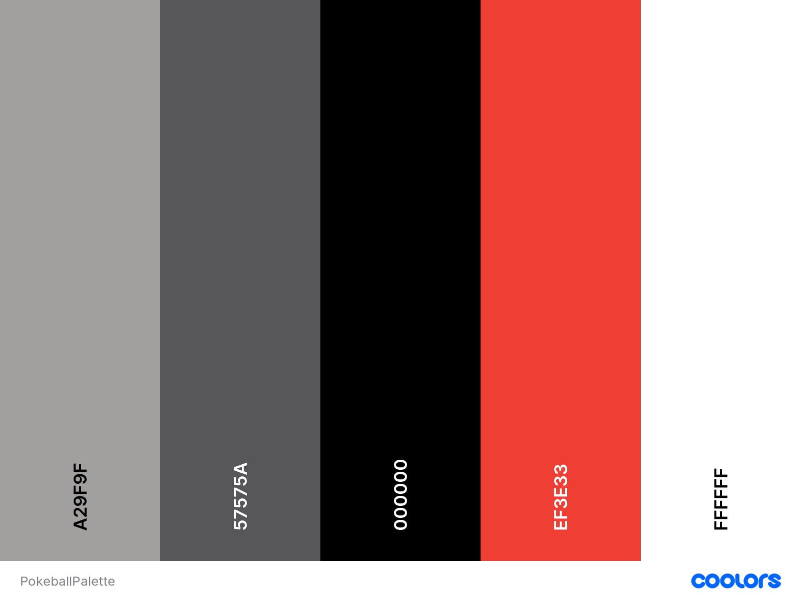

I plan on creating a Pokemon guessing game, similar to Wordle.
I plan on using the RESTful Pokémon API. - https://pokeapi.co/
Based on the colors of the original pokeball
I believe this is an A-level project because I went beyond making a simple search application. I was able to create an interactive experience similar to the game Wordle, but with Pokemon. I created a very pleasing layout for the user, and I also added quality of life features to make things easier for the player such as choosing which generation of pokemon the user wants to guess from and addding a suggestions dropdown where the user guesses that changes based on the generation they picked beforehand.
From the initial mockup, I only made a few changes. I removed the generation column, opting to allow the user to pick the generation they want to guess from beforehand. I also did not add in the ability to deactivate certain columns of info for more of a challenge but I may consider adding that feature in the future.